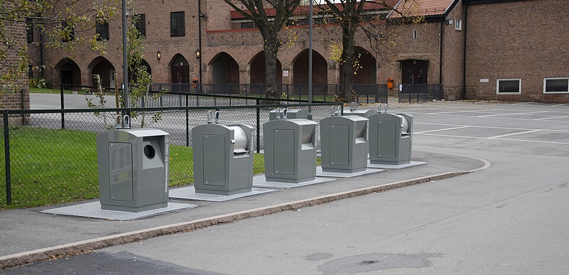

생활 · 환경
세움시 재활용 분리배출 방식, 내년부터 바뀌는 것으로 파악
배출 요일을 헷갈린다는 목소리도 함께 나온다.
세움시 재활용 분리배출 방식이 내년부터 바뀌는 것으로 파악됐다.
수거 대행사 사정을 아는 한 관계자는 하루 평균 수거량이 300t을 넘었다고 전했다.

배출 요일을 잘못 알아 수거되지 않은 사례는 지난달에만 400건이 넘었다.
분리배출 관련 민원은 전달보다 두 배 늘었다.
업계에서는 내년 수거 예산이 올해의 두 배 수준이 될 것으로 보고 있다.
재활용품을 자주 내놓는 사람이라면 모두가 알아야 할 내용이다.
배출 요일이 바뀌는 구간도 있어 주변에도 알려야 할 내용이다.
공식 안내는 집계가 끝난 뒤 나올 것으로 전해졌다.
배주현 기자 jhbae@testjournal.example
ⓒ testJournal. 무단 전재 및 재배포 금지.